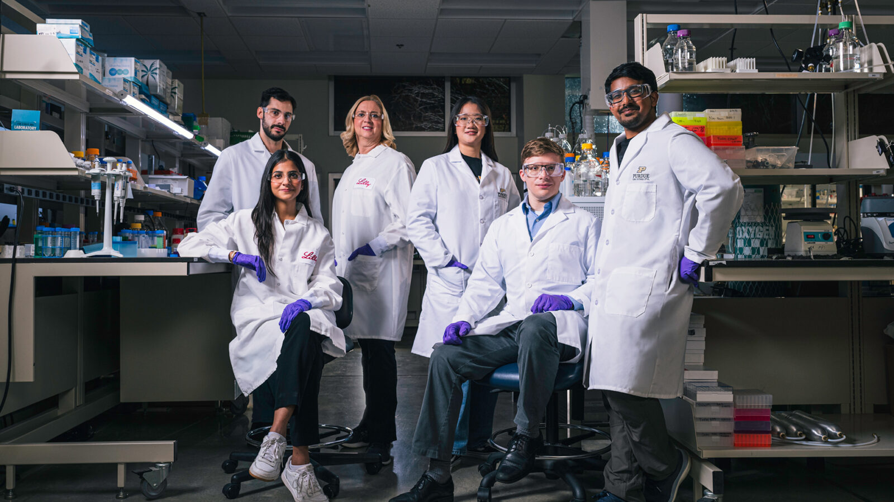

RWAA SA Organizational Chart and Expertise Explorer
RWAA SA Organizational Chart and Expertise Explorer
Employment:
Databases:
Tools:
Proficiency:
Immunology – HEOR
Hanbo Qiu
Yun Fang
Guangyong Li
Zhuowei Wang
Mohammed Rahman
Chaoyi Zheng
Neurology – HEOR
Hanbo Qiu
Yixun Wu
Xinran (Flora) Luo
Yunfei Wang
Yiyun Ma
Max Lyu
CMH – HEOR & GPS
Tianshu Feng
Melody Dehghan
Frank Cao
Pedram Azimzadeh
Alice Li
Debbie Tinsley
Alexandra (Zan) Meeks
Sean He
Zheng Gu
Xutong Li
Lian DuanPart-Time
Oncology – HEOR & GPS
Yimei Han
Xiaohong (Ivy) Li
Baoyi Feng
Patrick Li
Zhenhui Xu
Capabilities – All & GPS
Andy Dang
Andy Dang
Yifei Zhang
Jake William ColdironContractor
Immunology – HTA
Lili Huang
Neurology – HTA & GPS
Carol Qiao
Ying Jing
Peggy Lin
Xuan Wei
CMH – HTA
Steve Zheng
Junyuan Zheng
Thomas Huang
Bo Ma
Elaine Lui
Peng Du
Zbigniew KadziolaPart-Time
Xiaoliu Xu
Oncology – HTA & GPS
Yimei Han
Frank Tian
Ziwei Zhang
Noah Seethaler
Yueyi Xue
Guangyu Xu
Quan Yuan

“The people who make up this company are its most valuable assets.”
J.K. Lilly, Jr., 1950 (approx.)